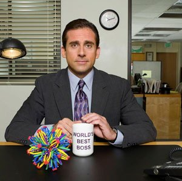

ABOUT ME

I, Michael Gary Scott, was born on March 15, 1965 in Scranton, Pennsylvania. I was a child star on the show "Fundle Bundle".
Hired as as a salesman at Dunder Mifflin on May 6, 1992 I proved to be extremely effective, which resulted in being promoted to regional manager.
I am commonly referred to as "The World's Best Boss" and I have the mug to prove it.
I enjoy improvised comedy, the internet, and screenwriting.